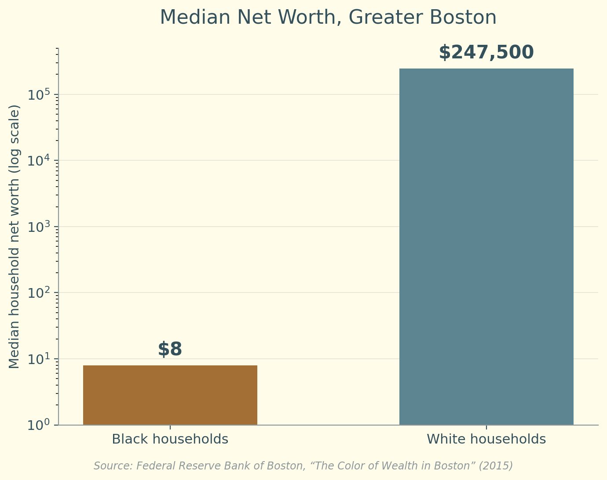
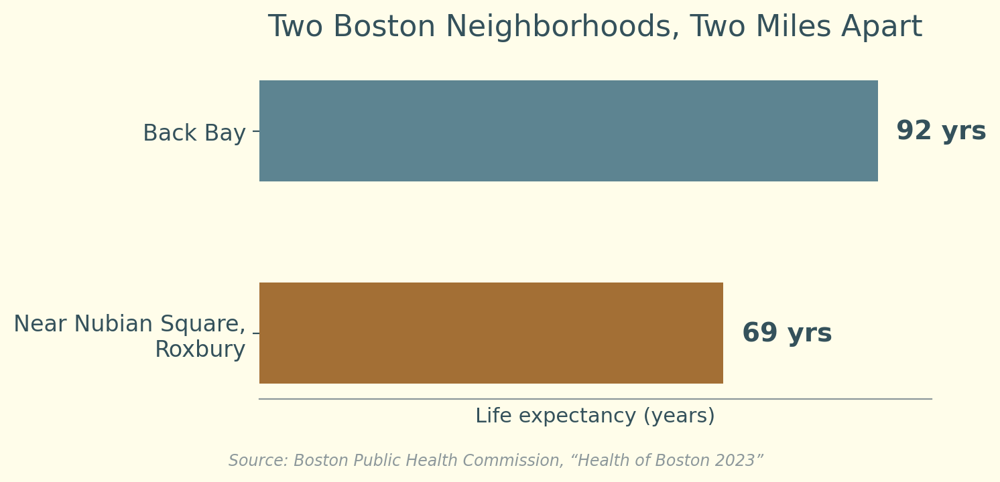
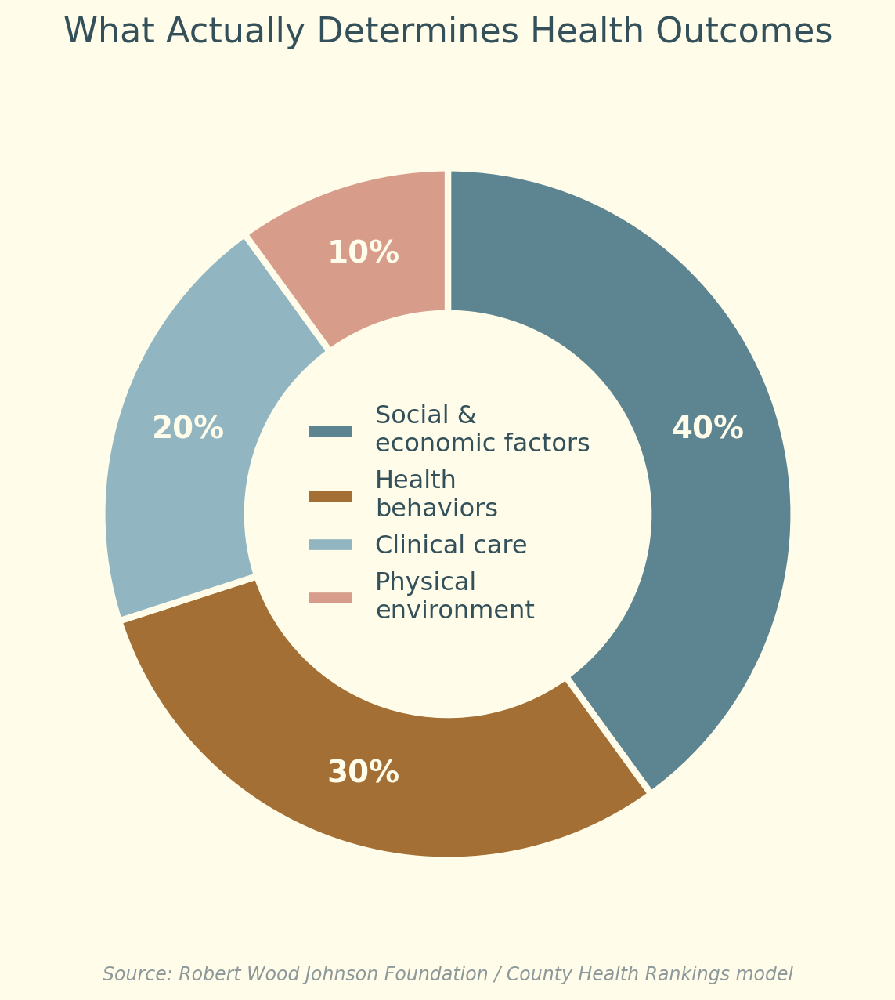

Research & Insights
Jess Breathe and Flow, and the Sanctuary space it is building toward, aren't built on intuition alone. They're grounded in public health research, and in original research of our own. Here's the case, in numbers and in findings.



15 cigarettes/day
The mortality risk of chronic loneliness
U.S. Surgeon General, "Our Epidemic of Loneliness and Isolation" (2023)
Beyond the statistics
Jessica's graduate research at Pepperdine's Graziadio Business School wasn't background reading for this work. It's the intellectual foundation of it: a qualitative study of 15 Black executive leaders navigating organizational systems not built for them, using Interpretative Phenomenological Analysis.
The study found that when organizations withhold the affirmation people need to feel secure in who they are, Black leaders build what the research calls "verification infrastructure," trusted circles of people who confirm what they see and feel is real. This is the empirical case for healing circles. They are not a nice-to-have. They are the infrastructure people build when institutions fail to provide it.
Leaders who mentor and open doors for others frequently described that work as chosen, not extracted, an intentional act the research ties to Black Consciousness theory's concept of collective self-repair. This is the grounding for a cooperative model: bridging practitioners and community isn't charity. It's a documented form of repair.
"We're here. We can exist in these spaces."
Two participants, independently, described financial security as what made deeper authenticity possible, a finding the original literature review didn't anticipate. It's independent confirmation, from the inside, of what the broader research shows: financial stress is a measurable driver of chronic stress and poor health outcomes. Integrating financial health alongside physical, emotional, and spiritual wellness isn't a scope expansion. It's the same finding, applied.
Be part of the answer
Federal support for community health equity work has been cut sharply since 2025. Local and community-rooted infrastructure is filling the gap right now. Every path below moves this work forward.
Sources